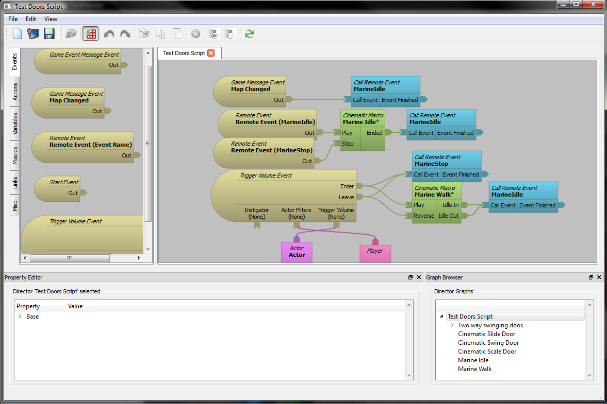

Director Node Graph Tutorial
Copyright 2004-2005
MOVES Institute, Naval Postgraduate School
700 Dyer Road
Monterey, CA 93943-5001
For more details and licensing information please visit:
http://www.delta3d.org
Welcome to the
Director
tutorial, here you will find a guide for using
Director
.
Director
is a node based visual flowgraph scripting engine for the
Delta3D
engine.
<- Prev
Next ->